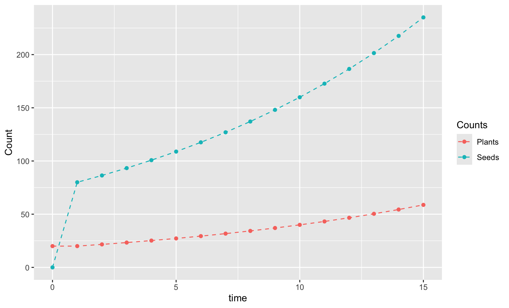

To begin the study of populations with different stages, we first think of a population that has exactly two stages. A particular example is of a population of plants that mature in a single growing season to release seeds at the end of the growing season. Because some seeds might not germinate immediately, we will want to keep track of how many seeds remain viable but still in the ground. We call these seeds the seed bank.
With this context in mind, let us consider a population of plants that has two state variables for each growing season. The first state variable is the number of viable but ungerminated seeds in the ground, \(S\text{.}\) The second state variable is the number of plants, \(P\text{.}\) For precision, we need to specify a specific time in the season when the measurements are made. Plants and seeds present at the start of the season may not survive to the end of the season. For this discussion, we will focus on the start of the growing season.
What will happen to the seeds over the course of a season? Some seeds will be eaten; others will be damaged or wash away. By the end of the season, only a fraction of those seeds will remain. At that time, the plants that matured will release a new batch of seeds adding to the seed bank. Then, at the start of the next growing season, some fraction of the seeds will germinate and become plants while the rest remain in the seed bank subject to additional losses during the season.
What will happen to the plants? Many species of plants are annual plants, meaning that at the end of one growing season the plant dies. Others are perrenial, meaning that a plant has a probability of surviving to the next year and repeat its reproductive cycle. Perrenial plants have the potential of more complicated life cycles, where reproduction does not necessarily happen every year. Additionally, a plant’s ability to reproduce generally increases with the size of the plant so that surviving plants are able to produce more seeds. We will consider here only a simplified case where plants are either annual or there is no observable difference between plants of different ages.
We represent the dynamics for the population graphically by including a box for each state variable. We let \(S\) represent the number of seeds in the seed bank that are viable but are not germinating, and we let \(P\) represent the number of plants at the start of the growing season. Our state vector consists of the pair of values,
We include arrows between the state variables to represent transitions of existing individuals. Arrows into each state not coming from other states represent new individuals, either new seeds that did not germinate or new plants that germinated in their first season. However, we include dotted arrows to indicate the source of those new seeds or plants. An arrow leaving and re-entering the same variable may optionally be present to indicate an explicit representation of survival within a state to the next season. Arrows leaving a state but not entering another state represent removal from the system, whether by consumption, death or decay.
Figure3.1.1.Model for a simple seedbank showing possible sources of change to the number of seeds and germinated plants.
The visual model helps us think through the different contributions that our model will need. The seedbank will need to account for new seeds from the previous season, survival of seeds that remain in the seedbank for the next year, and the reduction to the seedbank due to germination (transition to plants) or other losses. Similarly, the number of plants will need to account for newly germinated plants that from new seeds coming from the previous season as well as from seeds that were in the seedbank, survival of plants from the previous season, and losses of plants.
Many quantities can be calculated using values observed in the population. Given the number of plants that start a season, we might be able to observe the fraction that survive to the end of the season and release. Returning at the start of the next season, we could similarly count the fraction of plants that survive into the next season. For those plants that do release seeds, we might perform an observational experiment to count the average number of seeds that are released. An experiment might also be able to measure what fraction of seeds that are released germinate each year following their original planting.
A fraction \(f\) of the plants at the start of the season make it to the end of the growing season Consequently, the number of plants that release seeds at the end of the \(n\)th growing season is given by \(f \cdot P_n\text{.}\) Next suppose that a typical plant releases an average of \(\sigma\) (Greek letter “sigma” for “seeds”) seeds. The total number of released seeds is therefore calculated by \(\sigma \cdot f \cdot P_n\text{.}\) A fraction \(\alpha\) of those seeds will germinate immediately while the other fraction \(1-\alpha\) are added to the seed bank. Consequently, the number of new seeds added to the seed bank for \(S_{n+1}\) will be \((1-\alpha)\sigma f P_n\text{.}\) The number of new plants counted as part of \(P_{n+1}\) sprouting immediately from seeds will be \(\alpha \sigma f P_n\text{.}\) In addition, some fraction \(\mu_p\) of plants in season \(n\) will die at the end of the season; the fraction \((1-\mu_p)\) survive to the start of the next season.
For the seedbank, only a fraction of the seeds at the start of one growing season will survive to the start of the next growing season. If we let \(\mu_s\) be the fraction that does not survive the season, then \(1-\mu_s\) is the fraction that does survive. Then there will be a fraction of surviving seeds that germinate. This fraction could depend on the age of the seed, but the simplest model might use the same fraction \(\alpha\) as mentioned earlier. Consequently, the number of new plants resulting from germination of seeds in the seedbank will be calculated as \(\alpha (1-\mu_s)S_{n}\text{.}\) The number of seeds that survive but remain in the seedbank will be \((1-\alpha)(1-\mu_s) S_n\text{.}\)
Based on our reasoning, if we had all of those parameters calculated experimentally, we could create a mathematical model for our seedbank model using the equations
\begin{align}
S_{n+1} \amp = (1-\alpha)(1-\mu_s) S_n + (1-\alpha) \sigma f P_n\tag{3.1.1}\\
P_{n+1} \amp = \alpha (1-\mu_s) S_n + \alpha \sigma f P_n + (1-\mu_p) f P_n\tag{3.1.2}
\end{align}
The first term in (3.1.1) represents survival of seeds in the seedbank that do not germinate; the second term represents the new seeds added to the seedbank from plants in the previous season. The first term in (3.1.2) represents germination of seeds that were previously in the seedbank; the second term represents the germination of seeds that were released the previous season; and the third term represents the survival of plants from the previous season. For annual plants, all plants die at the end of the season so that \(\mu_p = 1\text{.}\)
When we do not know the detailed parameter values, we might rewrite the model with single parameters, such as follows:
\begin{align}
S_{n+1} \amp = a S_n + b P_n\tag{3.1.3}\\
P_{n+1} \amp = c S_n + d P_n\tag{3.1.4}
\end{align}
Some of the parameters can then be inferred. Comparing the two models, we see that \(a+c = 1-\mu_s\) so that \(\mu_s = 1 - (a+c)\text{.}\) Then we could calculate \(\alpha = \frac{c}{1-\mu_s} = \frac{c}{a+c}\text{.}\) In the case that \(\mu_p = 1\) (annual plants), we can find \(\sigma f = \frac{d}{\alpha}\text{.}\)
We can now explore the dynamics of this model using recursive sequences. Because there are two different state variables, each state variable gets its own projection function. Each of those functions depends on both state variables. Our initial state will also need a value for each of \(S_0\) and \(P_0\text{.}\) We will need to update both sequences within the same loop. When writing code, it is often better to use variable names for our parameters that reflect the meaning rather than the short symbol used within a mathematical equation. For example, instead of a short symbol for \(\mu_p\text{,}\) we might use a variable named plant_death since the symbol represents the fraction of plants that die.
To visualize the dynamics of the population, we will start by looking at the values of \(S_n\) and \(P_n\) versus \(n\text{.}\) The scales for these values are very different, so we will configure our plot to have scales for the two values on different sides of the graph.
# Parameters for the model
plant_death <- 1 # mu_p: Fraction of plants that die after a season
seed_death <- 0.9 # mu_s: Fraction of seeds in seedbank that do not survive
plant_to_seed <- 0.2 # f: Fraction of plants that survive to seed
seeds_per_plant <- 25 # sigma: Average number of seeds per plant
seed_germinate <- 0.2 # alpha: Fraction of seeds that germinate
# Calculated parameters
a <- (1-seed_germinate) * (1-seed_death)
b <- (1-seed_germinate) * seeds_per_plant * plant_to_seed
c <- seed_germinate * (1-seed_death)
d <- seed_germinate * (seeds_per_plant + 1 - plant_death) * plant_to_seed
# Initial values and length of calculation
S0 <- 0
P0 <- 20
N <- 15
# Create space for the data
t_vec <- 0:N
S_vec <- double(N+1)
P_vec <- double(N+1)
# Generate the sequences
S_vec[1] <- S0
P_vec[1] <- P0
for (n in 1:N) {
S_vec[n+1] <- a * S_vec[n] + b * P_vec[n]
P_vec[n+1] <- c * S_vec[n] + d * P_vec[n]
}
my_plot <- ggplot() +
geom_point(mapping = aes(x = t_vec, y = S_vec, color="S")) +
geom_path(mapping = aes(x = t_vec, y = S_vec, color="S"), linetype="dashed") +
geom_point(mapping = aes(x = t_vec, y = P_vec, color="P")) +
geom_path(mapping = aes(x = t_vec, y = P_vec, color="P"), linetype="dashed")
show(my_plot)
Listing3.1.2.

Figure3.1.3.Plot of the seed and plant counts as a functions of time.
When we look at the resulting graph, we notice that the the graph for each of the subpopulations almost look like exponential growth. This is a consequence of linear algebra. A pair of related sequences \(x_n\) and \(y_n\) that has a recursive projection model with the form
\begin{align*}
x_{n+1} \amp = a x_n + b y_n \\
y_{n+1} \amp = c x_n + d y_n
\end{align*}
is said to have a linear projection model.
Theorem3.1.4.
A pair of sequences \((x_n, y_n)\) with a linear projection model will asymptotically behave like geometric sequencees. That is, the ratios of values \(x_{n+1}/x_n\) and \(y_{n+1}/y_n\) both converge to a constant \(\lambda\) called the asymptotic geometric growth rate. Furthermore, suppose we calculate the total \(T_n = x_n + y_n\) and look at the ratios \(x_n/T_n\) and \(y_n/T_n\text{,}\) which represent the fractions of the total count in seed and plant form. The ratios always converge to values \(\rho_x\) and \(\rho_y\text{,}\) called the stable stage distribution, that are independent of initial values.
Let us add some additional calculations to the previous to calculate the ratios and the stage distribution. We will see the convergence directly. It will be more convenient to create a tibble data-frame in this circumstance and add the ratios as additional columns. When we calculate the ratios \(\lambda\text{,}\) there will be one fewer value than calculated sequence values. The data-frame needs a value for each column, so for the missing value we use NA.
# Create a tibble
library(tidyr)
library(dplyr)
# Some new columns are easy to compute
seedbank_data <- tibble(t = t_vec, S = S_vec, P = P_vec) |>
mutate(total = S + P) |>
mutate(rho_S = S/total, rho_P = P/total)
# Some require comparing terms in different positions
seedbank_data$lambda_S <- NA
seedbank_data$lambda_P <- NA
seedbank_data$lambda_S[2:(N+1)] <- S_vec[2:(N+1)] / S_vec[1:N]
seedbank_data$lambda_P[2:(N+1)] <- P_vec[2:(N+1)] / P_vec[1:N]
# Create plots for the growth ratio of each count
growth_ratio_plot <- seedbank_data |>
pivot_longer(cols = c(lambda_S, lambda_P),
values_to = "lambda", names_to = "category") |>
ggplot(mapping = aes(x = t, y = lambda, color = category)) +
geom_point() + geom_line(linetype = "dashed")
show(growth_ratio_plot)
# Create plots for the stage distribution
stage_distribution_plot <- seedbank_data |>
pivot_longer(cols = c(rho_S, rho_P),
values_to = "rho", names_to = "category") |>
ggplot(mapping = aes(x = t, y = rho, color = category)) +
geom_point() + geom_line(linetype = "dashed")
show(stage_distribution_plot)
Listing3.1.5.Figure3.1.6.Plot showing the ratio of growth giving \(S_{n+1}/S_n\) and \(P_{n+1}/P_n\) which converge to the asymptotic growth ratio.
Figure3.1.7.Plot showing the fraction of the total count as seeds and plants \(\rho_S[n] = S_{n}/(S_n+P_n)\) and \(\rho_P[n] = P_{n}/(S_n+P_n)\) which converge to the the stable stage distribution.
As we can see in Figure 3.1.6, both ratios \(\lambda_P\) and \(\lambda_S\) start with different values but quickly converge to the same value close to \(\lambda = 1.08\text{,}\) as discovered by inspecting the values of the data-frame. Looking at the values of \(\rho_S\) and \(\rho_P\text{,}\) we discover that the stable stage distribution has fractions \(\rho_S = 0.8\) and \(\rho_P = 0.2\text{.}\) In other words, after a few seasons, if we were to count the total number of seeds and plants, about 80% of that count would be from seeds and about 20% would be plants.
In the next section, we will learn the mathematical objects that find these values, introducing the ideas of matrix models, eigenvalues and eigenvectors.